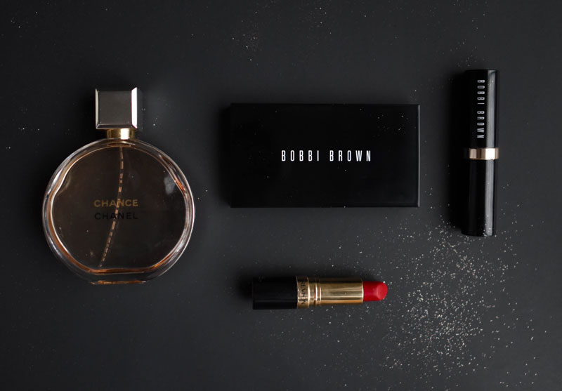

Men's hairstyle for all face shapes
Trust us when we say that a strategic hairstyle will make the world of difference when it comes to enhancing your face shape. Let’s face it (pun intended), your mug is the moneymaker, and your hair should frame it according to what suits it best. Simple enough, right? The great thing about determining your face shape and finding an appropriate hairstyle is that it should work to enhance certain favourable features while exaggerating smaller dimensions and concealing larger ones. As with dressing and grooming, you need to play to your strengths and find a hairstyle that will suit you. Keep in mind that your individual features and colourings will also aid you in determining what hairstyling will look best on you. Luckily, our guide to finding the perfect men’s hairstyles for your face shape will show you the best ways to enhance your finest features.

What’s My Face Shape? You will need first to study your face. While that sounds a little weird (and a touch narcissistic), it will help you determine your face shape. Pull back your fringe and pay attention to the length and width of individual features. The most important dimensions to focus on is the length of your face, the width of your forehead as well as the width of your cheekbones, jawline and chin. In comparing these dimensions, you will be able to figure out which face shape you are and commit to a haircut and hairstyle that is most suited to your individual facial proportions.
Makeup Tips For College Going Girls

If you are in college, chances are you spend some, okay, a lot of time in front of the mirror each morning. Along with other things, looking her best is on every college going girl’s to-do list. And why it should not be, after all, you are at your peak with a healthy body, skin and a relatively carefree mind. College days may be the perfect time to try out the latest makeup trends, but it is also the time for perfecting the basics and understanding what kind of makeup works in your favour. Makeup is a wonderful way to express yourself and enhance your beauty but if it is taking too much time or making you look overdone, clearly you are doing something wrong. Here are some useful makeup tips for girls who go to college, that’ll save you time and help you look your best. Apply a face primer Face primers are formulated to smoothen out the skin by filing in the pores giving it a naturally polished look. Primer also acts as a base for your makeup helping it to last longer. Wear primer after moisturising the skin and before applying your foundation. You can also wear primer alone if you want to go light. It will blur out the blemishes and give your skin an even finish without feeling heavy. Keep the base light Save the heavy base for weddings and parties. If you have good skin, you can get away with minimum or no foundation. Young skin does not need a lot of coverage. Instead of full coverage foundation go for tinted moisturiser, BB or CC cream and set it with translucent powder. If you have blemishes and dark circle, hide those with orange or yellow colour correctors. Blush and bronzer Add a hint of colour to your cheeks by sweeping on coral or pink blush. These are best for Indian skin tones. If your skin is on the fairer side, opt for coral blush and for those with skin on the duskier side, pink blush is more suitable. A sweep of bronzer on the hollows of the cheeks, jawline and edges of the forehead can give you a sun-kissed look. Choose darker bronzer for dusky skin and light one for lighter skin. See: Chisel It Show Stopper 3 in 1 Bronzer+Blush+Highlighter Do not underestimate the mascara A little bit of mascara can immediately add oomph to your look without much effort. If you are short on time (aren’t we all!), or on days when you want to skip the eye makeup routine, just add a few coats of mascara on your lashes, wear a lipstick and you are good to go. Lip gloss or lip balm If you are not very comfy wearing lipstick to college, wear lip gloss or tinted lip balm. Apart from being subtle and fashionable, glossy lips are super cute. You can wear it to college, to office or a party; they just fit anywhere and keep your lips from drying. Prep your lips Dry, chapped lips are unsightly and uncomfortable. These will also make your lipstick or lip gloss look bad. Exfoliate your lips using lip scrub twice a week and always keep them moisturised with a lip balm or chap stick. Always apply lippy on clean, moisturised lips for best results. See: Scrubilicious Lip Scrub & Colour Enhancer Nail the nail art Nails are one asset we all can experiment with. Try out new nail art ideas and unusual colours and add a fun element to your look. Nail art is quite popular and there’s a design for your every mood and style. Go ahead, get cheeky with your nail paint. Avoid dramatic looks Shimmery smokey eye with bold lips that you saw on Instagram would be fabulous for a party but it's not appropriate for the 11 am Finance class. Try keeping things soft and easy going by picking sorbet and pastel colours. A soft smoky eye can replace an intense one and blinding highlighter can be taken over by soft, natural glow. Makeup removing ritual However less makeup you have been wearing, sleeping in it is never a good idea. All those chemicals can make your skin breakout and even cause rashes. Moreover, your skin needs to go bare and breathe as much as it can. Ensure to get all makeup out from your skin at the end of the end and wash your face before going to bed.

Lance Smith
There are millions (if not billions) of men out there with healthy heads of hair. That means a ton of different men’s hairstyles. Likewise, it means an open door policy for the best men’s hairstyle sites and blogs. After all, you can simply never have too many perspectives or too much coverage on something as diverse as hairstyle.
John Doe
This article on hair care tips for men is really good. Each point in this article will definitely provide usefulness for all men looking for hair care advice. The first point is very important for maintaining a healthy appearance for your hair, especially if you can let it dry naturally.
Reply
David Rocco
hanks for sharing this valuable Hair Care Tips for Men! Due to today's busy schedule and stress we look older before our old age. Our hair plays very important role in our personality. So you are doing a great job I want to say again thanks for this.
Reply
Mathew James
Nice article on haircare, hoping to try it. thanks for sharing with us.
Reply
James Boyle
I’m a college swimmer and because I’m an idiot I’m going to try and grow my hair out for the next 5 months(still plan on shaving though). It helps that I don’t have a car and don’t want to walk a 2 miles to the nearest barbershop. That said my hair grows kinda thick and big rather than long, and the best way to describe the flow I’m going for is hockey hair. Any sort of product recommendation or anything would be appreciated.
Reply
David James
After almost a decade , I felt the the call to bring back the HAWK UNDERCUT, looking back i had plenty of awesome hairstyles but this one is something special for me, I feel the power of the simplicity and short hair provide me with a quicker styling so i have time to put more detail in to the hairstyle. The feeling of this hairstyle is an amazing experience, im feeling young and confident, ready to take 10 more years on the youtube channel
Reply
John Doe
Whut are you serious ? Like you made a buzz cut video and then your hair grow very long very fast bravo
Reply